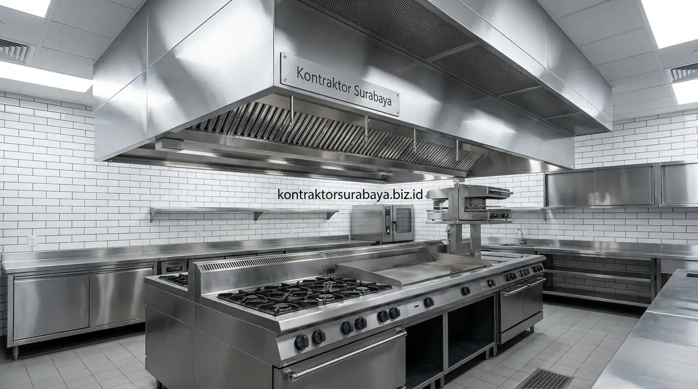

Industri Food & Beverage (F&B) di kawasan metropolitan Surabaya, Sidoarjo, dan Gresik berkembang sangat pesat dengan konsep cafe estetik dan restoran tematik yang memikat. Namun, di balik dekorasi interior yang fotogenik, kunci keberhasilan operasional bisnis kuliner terletak pada sistem utilitas gedung yang tak kasat mata: Mechanical, Electrical, and Plumbing (MEP).
Banyak pemilik usaha kuliner mengalami kerugian besar setelah operasional berjalan karena aroma minyak tengik atau bau selokan tercium hingga ke meja pengunjung (dining area). Hal ini disebabkan oleh kesalahan fatal perancangan pipa pembuangan dan tidak adanya perangkap lemak (grease trap) yang memenuhi standar teknis. Bermitra dengan jasa kontraktor bangunan komersial Surabaya yang memahami SOP MEP komersial adalah jaminan mutlak agar bisnis kuliner Anda higienis, lulus izin sanitasi dinas, dan nyaman bagi pelanggan.
1. Kenapa Perencanaan MEP Krusial pada Bangunan Cafe dan Restoran
Kesalahan pada perencanaan MEP di bangunan cafe dan restoran berdampak langsung pada kenyamanan operasional harian, mulai dari aroma yang mengganggu hingga masalah kebocoran pipa air dan korsleting listrik yang sangat sulit serta mahal diperbaiki setelah lantai keramik terpasang rapi.
Berbeda dengan bangunan rumah tinggal biasa, dapur komersial resto beroperasi nonstop dengan beban daya listrik tinggi (oven, chiller, espresso machine), volume air buangan berlemak pekat, serta produksi asap panas yang masif. Mengintegrasikan gambar kerja MEP bersama jasa desain interior cafe & resto sejak tahap konsep denah mencegah terjadinya pembongkaran dinding saat grand opening.
2. Fungsi Grease Trap dalam Sistem Pembuangan Dapur Komersial
Grease trap (perangkap lemak) berfungsi memisahkan, menyaring, dan mengendapkan minyak hewani/nabati serta sisa padatan makanan dari air buangan bak cuci (sink) sebelum air tersebut mengalir ke saluran riol kota atau IPAL.
Prinsip kerja grease trap memanfaatkan perbedaan massa jenis antara air dan lemak. Tanpa unit penyaring ini, minyak cair bersuhu hangat akan membeku dan mengeras di dinding bagian dalam pipa PVC (grease clogs). Seiring berjalannya waktu, tumpukan lemak membusuk, menghasilkan gas hidrogen sulfida yang menyengat, serta menyebabkan saluran pipa tersumbat total yang memaksa resto tutup sementara demi perbaikan darurat.
3. Penempatan Grease Trap yang Tepat agar Tidak Menimbulkan Bau
Kontraktor Surabaya menerapkan 4 kaidah penempatan grease trap agar dapur tetap bersih dan aroma tidak menyebar:
- Jarak Aman dari Dining Area: Grease trap sentral diposisikan di zona servis luar bangunan atau koridor belakang terisolasi dengan pintu kedap udara.
- Ventilasi Pipa Udara Mandiri (Vent Pipe): Dilengkapi pipa ventilasi udara 1,5–2 inci yang dinaikkan hingga melebihi elevasi atap tertinggi bangunan agar uap gas fermentasi terbuang ke atmosfer bebas.
- Akses Mudah untuk Pembersihan Rutin: Manhole penutup grease trap harus mudah dibuka oleh tim kebersihan harian tanpa mengganggu sirkulasi pelayan dan chef.
- Kemiringan Pipa (Slope) Presisi: Kemiringan jalur pipa inlet minimal 1,5%–2% untuk memastikan air cucian mengalir deras dan tidak mengendap di pipa horizontal.
4. Spesifikasi Teknis Instalasi MEP Dapur Cafe Restoran Standar SOP
Berikut tabel parameter teknis instalasi MEP dapur komersial standar Kontraktor Surabaya:
| Komponen Utilitas | Spesifikasi Material Standar SOP | Sistem Pengaturan Khusus | Standar Keamanan & Higienitas |
|---|---|---|---|
| Pipa Air Kotor Dapur | Pipa PVC Kelas AW Ø 3" – 4" tebal anti-pecah | Pemisahan 100% dari jalur pipa septic tank toilet | Mencegah kontaminasi silang dan gas balik amonia. |
| Unit Grease Trap | Stainless Steel SUS 304 / Fiberglass multi-chamber | Kapasitas disesuaikan flow rate (GPM) bak cuci piring | Penyaringan lemak efektif hingga 95% bebas korosi. |
| Ventilasi Exhaust Hood | Hood Stainless Steel + Baffle Grease Filter | Negative Pressure: Exhaust CFM > Fresh Air CFM | Menghisap 100% uap panas masakan tanpa bocor ke dining. |
| Instalasi Gas & Elektrikal | Pipa Seamless Black Steel Sch 40 & Kabel NYY/NYFGBY | Gas leak detector + Automatic shut-off valve sensor | Mencegah risiko kebocoran gas LPG dan beban listrik berlebih. |

5. Jalur Pipa Air Kotor Dapur yang Terpisah dari Pipa Air Kotor Toilet
Pemisahan jalur pipa air kotor dapur (grey water) dan pipa limbah toilet (black water) adalah hukum wajib dalam rekayasa plumbing bangunan komersial.
Jika kedua jalur disatukan dalam satu pipa induk tanpa pemisah, lemak dapur akan bereaksi dengan zat kimia pembersih toilet dan kotoran padat, membentuk gumpalan keras seperti semen (fatberg). Selain itu, tekanan udara saat toilet di-flush dapat mendorong gas berbau tinja keluar melalui lubang saringan lantai (floor drain) dapur. Memisahkan kedua jalur ini sejak pembuatan tahapan pondasi dan struktur dasar menjamin perawatan yang mudah serta memenuhi audit lingkungan hidup (AMDAL/UKL-UPL).
6. Sistem Ventilasi Dapur untuk Mencegah Bau Menyebar ke Area Makan
Sistem ventilasi dapur komersial profesional wajib memenuhi 4 pilar teknis:
- Exhaust Hood dengan Baffle Filter: Menangkap partikel minyak dan asap di atas kompor wok/grill sebelum sempat berdifusi ke udara ruangan.
- Tekanan Udara Negatif (Negative Air Pressure): Menjaga volume udara yang dikeluarkan exhaust hood lebih besar dibanding suplai udara masuk, sehingga udara dari ruang makan tertarik ke dapur, bukan sebaliknya.
- Ducting Kedap Minyak (Grease Duct): Saluran cerobong baja berinsulasi tahan api yang mengalirkan udara panas langsung ke exhaust blower atap (roof fan).
- Make-Up Air Unit (Fresh Air): Menyuplai udara segar dari luar yang telah disaring agar suhu di dalam dapur tetap sejuk dan chef dapat bekerja dengan produktif.
7. Koordinasi antara Jalur MEP dan Tata Letak Dapur Sejak Tahap Desain
Sinkronisasi antara tim jasa arsitek Surabaya, kontraktor MEP, dan konsultan kitchen equipment sebelum pengecoran lantai adalah langkah krusial untuk menghemat biaya.
Setiap posisi wastafel cuci piring, grease trap portabel, kompor induksi, dan titik stop kontak water heater membutuhkan sparing pipa tanam (embedded sleeves) pada dak lantai. Perubahan posisi meja dapur setelah beton dicor membutuhkan proses core drill lantai yang berisiko memotong besi tulangan struktur dan melipatgandakan RAB estimasi biaya konstruksi.
8. Kesalahan Umum dalam Instalasi MEP Cafe dan Restoran
Hindari beberapa kesalahan fatal yang sering dilakukan pemborong non-spesialis bangunan komersial:
- Memasang Grease Trap Berkapasitas Kekecilan: Menyebabkan perangkap lemak meluap dalam hitungan hari dan mencemari lantai dapur.
- Mengabaikan Jalur Pipa P-Trap (Siphon): Tidak memasang leher angsa perangkap air pada floor drain, sehingga bau selokan leluasa naik ke ruangan.
- Kapasitas Blower Exhaust Kurang Daya (Under-Capacity CFM): Dapur menjadi pengap, berasap tebal, dan alarm kebakaran gedung kerap terpicu salah.
- Tidak Memasang Clean Out (Lubang Kontrol Pipa): Menyulitkan pembersihan saat terjadi sumbatan pada jalur pipa belokan di dalam tanah.
"Cafe yang sukses dibangun bukan hanya untuk memanjakan mata pengunjung di area depan, melainkan dibangun dengan rekayasa MEP yang higienis dan presisi di area dapur belakang." — Erlang Sinatrya, Lead Project Engineer Kontraktor Surabaya
Wujudkan bangunan cafe, coffee shop, atau restoran impian Anda bersama Kontraktor Surabaya. Kami menyediakan layanan terintegrasi mulai dari perencanaan denah komersial, perhitungan Surat Penawaran Harga (SPH) transparan, konstruksi struktur baja/beton seperti pada ulasan konstruksi cafe outdoor industrial, hingga instalasi MEP berstandar SNI. Kunjungi galeri portofolio kami atau hubungi tim ahli kami di halaman tentang kami.